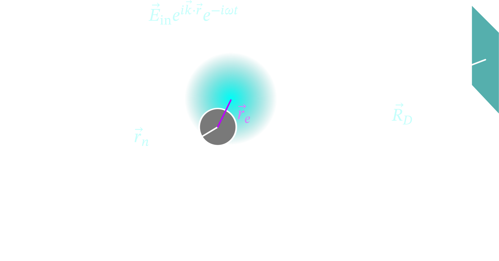
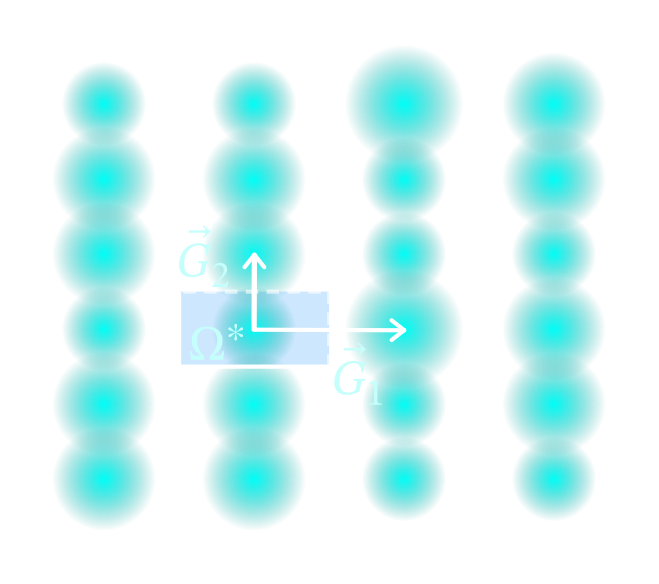
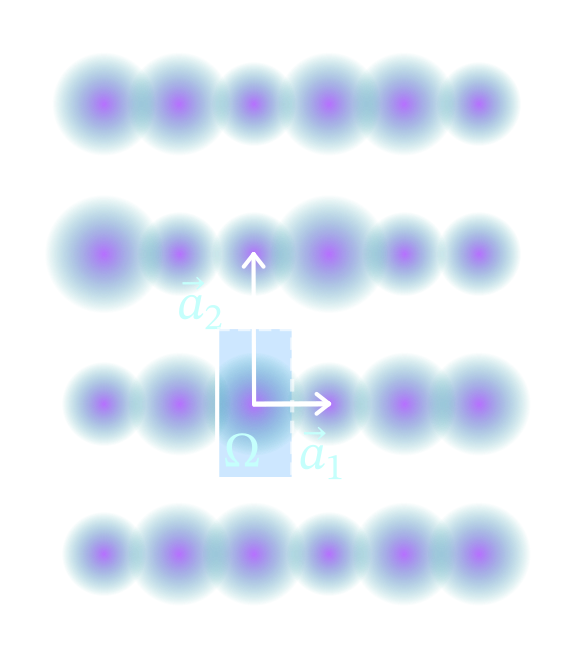

Diagnostic Manual of Material Simulation
Warning
The following practices are considered academic integrity violations.
- Writing with LLMs.
- Copying from textbooks.
If you do not have the time, effort, or interest for this writing exercise, it is preferable to not write at all.
Requirements
Given a concept, there are three questions that we like to answer:
- What is the physical context that makes it important?
- How to formulate it with mathematical precision and clarity?
- How to implement it algorithmically in practice?
You should answer one or more of these questions if you can unless you have better ideas. What you should not do is to dismiss or evade these questions by writing things that make no sense.
Notation
- Dynamic tensors: A tensor whose dimensions are variables or infinite such as \(\mathbb{R}^{N \times N}\). For such tensors, use a letter with no decoration such as \(x\) or \(T\). This includes scalar, vector, matrices, and higher dimensional tensors.
- Static tensors: A tensor whose dimensions are constants such as \(\mathbb{R}^{4}\). For such tensors, add an arrow on top of the letter. For example, \(\vec{x}\) or \(\vec{T}\).
- Mixed tensors: If a tensor has both static and dynamic dimensions such as \(\mathbb{C}^{2 \times N}\), adopt the notation for static tensors.
- Fourier transforms: use a hat such as \(\hat{\rho}\).
- Fourier series coefficients: use an overline such as \(\overline{u}\).
- Field, Ring, Module, Group: use blackboard bold such as \(\mathbb{Q}\).
- The reciprocal of an algebraic space: add a star such as \(\mathbb{L}^*\).
- Quantum states: use braket notation such as \(\ket{\psi}\).
- Cartesian inner product (dynamic): use braket notation \(\bra{\psi}\ket{\phi}\) instead of math notation \(\langle \psi, \phi \rangle\).
- Cartesian inner product (static): \(\vec{u} \cdot \vec{v}\).
- Coulomb inner product (static): \((\psi| \phi)\).
- Outer product: \(\ket{\psi}\bra{\phi}\) for quantum states and \(\vec{u} \vec{v}^T\) for static vectors.
- Frobenius norm: \(|\vec{r}|\).
- Partial derivatives: write \(\partial \psi(k, r) / \partial r\), \(\partial_r \psi(k, r)\), \(D(r \mapsto \psi(k, r))(r)\) or \(\nabla_{\vec{r}} \psi(\vec{k}, \vec{r})\). Do not use \(\psi_x\) or \(\dot{\psi}\).
- Variational derivatives: write \(\nabla J(\psi)\) instead of \(\delta J(\psi) / \delta \psi\).
- Finite parameter: if the parameter is on a finite domain, use subscript such as \(n\) in \(\psi_{n k}(r)\).
- Infinite (possible countable) parameter: keep the parameter in parenthesis such as \(P\) in \(w_n(P, r)\).
- Summation: write explicit summations such as \(\sum_i u_i v_i\). Avoid Einstein summation.
- Parenthesis: do not use \([]\) as parenthesis. Reserved them for commutators.
- Exceptions can be made on a case by case basis to be consistent with the literature.
Symmetry/lattice
## X-Ray scattering We will follow the treatment of [@ModernCondenseGirvin2019] and [@ClassicalElectJackso1999]. ### X-Ray scattering experiment Given a piece of material in your hand, how do you find out its atomic coordinates? Before electron tunneling microscope, the standard approach is X-Ray scattering, which allows you to determine the geometry of the material by shining light on it. {#fig-x-ray} !!! figure  The setup of a simplified experiment is depicted in [](#fig-x-ray). Given a atom at $\vec{r}_n$, which has an electron with a time dependent position $\vec{r}_e(t)$ relative to the nuclei. We shine an electromagnetic planewave to the atom with wave vector $\vec{k}$, which shakes the electron into a harmonic motion. The oscillating electron then radiates an electromagnetic field that is received by a detector at $\vec{R}_D$, which measures the intensity of the radiated wave. By measuring the intensity of the radiation at different $\vec{R}_D$, we aim to infer the location of the atom $\vec{r}_n$. This requires a theoretical model of the measurement $\vec{E}(\vec{R}_D, t)$ as a function of $\vec{r}_n$, which is inverted to obtain $\vec{r}_n$ The experimental setup establishes a few assumptions that we will later exploit when modeling 1. the electron is considered a classical point charge. 2. the electron moves slowly, so magnetic field can be ignored. 3. the nuclei is too heavy to move or radiate. 4. the detector is far from the source, so we can make far field approximations. Given these assumptions, we can build a model for the experiment. ### A point charge in an electric field An X-Ray can be approximately modeled as a planewave, whose electrical component takes the form $$ \begin{equation} \vec{\epsilon}(\vec{r}, t) = \vec{E}_{\mathrm{in}} \Re{e^{- i \omega t} e^{i \vec{k} \cdot \vec{r}}}, \end{equation} $$ where $\vec{E}_{\mathrm{in}}$ is the magnitude and polarization of the field, $\omega$ is the frequency, and $\vec{k}$ is the inverse wave length. We have taken the real part of the complex wavefunction because the electric field is real-valued, but it is customary in electromagnetism keep everything complex and take the real part at the end, so we will do the same. The X-Ray exerts a force on the electron, which moves according to Newton's law. Therefore, we can solve and ODE to obtain $\vec{r}_e(t)$ $$ \begin{equation} \frac{\partial^2 \vec{r}_e(t)} {\partial t^2} = - \frac{e}{m_e} \vec{\epsilon}(\vec{r}_n + \vec{r}_e(t), t), \label{eqn:x-ray-ode} \end{equation} $$ where $m_e$ is the mass of the electron. Let us also assume that the incident field is transverse, which means that $\vec{E}_{\mathrm{in}} \cdot \vec{k} = 0$. Because the electron moves in the direction of the field, we also have $\vec{r}_e(t) \cdot \vec{k} = 0$. This allows us to write $\vec{\epsilon}(\vec{r}_n + \vec{r}_e(t), t) = \vec{\epsilon}(\vec{r}_n, t)$ and the solution to Eq. $\ref{eqn:x-ray-ode}$ is $$ \begin{equation} \vec{r}_e(t) = \frac{e}{ m_e \omega^2} \vec{E}_{\mathrm{in}} e^{i \vec{k} \cdot \vec{r}_n} e^{- i \omega t}. \end{equation} $$ We have implicitly and arbitrarily chosen a boundary condition because different boundary conditions will lead to the same result. ### Radiation from an oscillating dipole An oscillating point charge radiates electromagnetic field. This can be seen by solving the Maxwell equation with the source electron density $$ \begin{equation} \rho(\vec{r}, t) = e \delta(\vec{r} - \vec{r}_e(t)). \end{equation} $$ The solution to this type of problems can be found in 9.1 and 9.2 in [@ClassicalElectJackso1999], which approximates the vector potential given a time harmonic source current $$ \begin{equation} \vec{A}(\vec{r}, t) = \frac{\mu_0}{ 4 \pi} \frac{e^{i \vec{k} \cdot \vec{r}}}{r} \int \vec{J}(\vec{r}', t) \mathrm{d} r', \label{eqn:vector-potential} \end{equation} $$ where $\mu_0$ is one of many annoying but inconsequential constants that you should not care about. This approximation holds when 1) the source $\vec{J}$ is localized in space and 2) $\vec{r}$ is far away from the source (far field), and 3) the current is time harmonic, i.e., $\vec{J}(\vec{r}, t) = \vec{J}(\vec{r}) e^{-i \omega t}$. Since our source is given in terms of the charge density, we need to relate it to the current density through the continuity relation. {#cont-relation} !!! theorem For the purpose of demonstrating the syntax for theorems, we write the continuity relation as a theorem $$ \begin{equation} \grad \cdot \vec{J} (\vec{r}, t) = \frac{\partial \rho(\vec{r}, t)}{\partial t} = (\nabla \delta) (\hat{r} - \hat{r}_e(t)) \cdot \frac{\partial \vec{r}_e(t)}{\partial t}, \end{equation} $$ which is indeed time harmonic because $\vec{r}_e(t)$ is time harmonic. We can combine Eq. [](#cont-relation) with integration by part to obtain an electric dipole $$ \begin{equation} \vec{p}(t) = \int \vec{J} (\vec{r}', t) \mathrm{d} r' = - \int \vec{r}' \nabla \cdot \vec{J}(\vec{r}', t) \mathrm{d} r' = - \int \vec{r}' \rho(\vec{r}', t) \mathrm{d} r' = -e \vec{r}_e(t). \end{equation} $$ The integration by part works because the source current $\vec{J}$ is localized in space, so the boundary term vanishes. Plugging this into the vector potential in Eq. $\ref{eqn:vector-potential}$ yields $$ \begin{equation} \vec{A}(\vec{r}, t) = - \frac{\mu_0 e}{ 4\pi} \frac{e^{i \vec{k} \cdot \vec{r}}}{r} \vec{r}_e(t). \end{equation} $$ The magnetic field can be obtained through the vector potential and the electric field can be obtained from the fourth Maxwell equation. $$ \begin{align} \vec{H}(\vec{r}, t) &= \frac{1}{\mu_0} \nabla \times \vec{A}(\vec{r}, t),\\ \vec{E}(\vec{r}, t) &= \frac{i Z_0}{k} \nabla \times \vec{H}(\vec{r}, t), \end{align} $$ where $Z_0$ is an unimportant physical constant. This produces an electric field at the detector position as $$ \begin{equation} \vec{E}(\vec{R}_D, t) = \frac{e^2}{m_e c^2} \left( \hat{n} \times (\hat{n} \times \vec{E}_{\mathrm{in}}) \right) e^{i \vec{k} \cdot \vec{r}_n} e^{-i \omega t} \frac{e^{i |\vec{k}| |\vec{R}_D - \vec{r}_n|}}{|\vec{r}_D - \vec{r}_n|}. \label{eqn:scattered-field} \end{equation} $$ ### Phase Approximation In the form of $\ref{eqn:scattered-field}$, it is still inconvenient to solve for $\vec{r}_n$ given the measurements $\vec{E}(\vec{R}_D, t)$, so we can further approximate it with a Tylor expansion so that it looks like a planewave. $$ \begin{equation} |\vec{k}| |\vec{R}_D - \vec{r}_n| = |\vec{k}| |\vec{R}_D| \sqrt{1 - 2 \frac{\vec{r}_n \cdot \vec{R}_D}{|\vec{R}_D|^2} + \frac{|\vec{r}|^2}{|\vec{R}_D|^2}} \approx |\vec{k}| |\vec{R}_D| - |\vec{k}| \frac{\vec{r}_n \cdot \vec{R}_D}{|\vec{R}_D|} = |\vec{k}| \hat{n} \cdot \vec{R}_D - |\vec{k}| \hat{n} \cdot \vec{r}_n \end{equation} $$ Defining $\vec{q} = |\vec{k}| \hat{n} - \vec{k}$, which can be determined from the position of the detector and the planewave direction, we find $$ \begin{equation} \frac{e^{i |\vec{k}| |\vec{R}_D - \vec{r}_n|}}{|\vec{R}_D - \vec{r}_n|} \approx \frac{e^{i |\vec{k}| |\vec{R}_D|}}{|\vec{R}_D|} e^{i (\vec{k} + \vec{q}) \cdot \vec{r}_n}. \end{equation} $$ With this approximation, we find that the dependence of the radiated field on the position of the detector and the atom to be. $$ \begin{equation} \vec{E}(\vec{R}_D, t) \propto e^{- i \vec{q} \cdot \vec{r}_n}. \end{equation} $$ ### Form factor In the case where there are $N_e$ electrons, we have multiple sources of radiation, and they superimpose due to the linearity of the Maxwell equations. Thus, we can replace $e^{- i \vec{q} \cdot \vec{r}_n}$ by $$ \begin{equation} f(\vec{q}) = \sum_{i = 1}^Z e^{- i \vec{q} \cdot \vec{r}_j}, \end{equation} $$ which is called the form factor. More generally, when the electrons are not point charges but charge densities $\rho$, the form factor is just the Fourier transform of the density. $$ \begin{equation} f(\vec{q}) = \int \mathrm{d} \vec{r} e^{- i \vec{q} \cdot \vec{r}} \rho(\vec{r}). \label{eqn:form-factor} \end{equation} $$ Since the detector measures $f(\vec{q})$, we can recover the electron density by taking a inverse Fourier transform. It is worth pointing out that the model we have developed for the X-Ray scattering experiment breaks down when we have more than one electrons or when the electron is not a point charge. Thus, we have not proven $\ref{eqn:form-factor}$ as a relation between the measurement $f(\vec{q})$ and the electron density $\rho$. ## Bravais and reciprocal lattice Once we measure $f(\vec{q})$ experimentally, it turns out that it sharply peaks on a lattice, which is shown in [](#recip). {#recip style=\"width:400px\"} !!! figure  This lattice can be described as a set of integer linear combinations of three basis vectors $G_1$, $G_2$, and $G_3$. $$ \begin{equation} \mathbb{L}^{*} = \left. \left\{ \sum_{i = 1}^{3} n_i \vec{G}_i \right| n_i \in \mathbb{Z}, \forall i \in [\![3]\!] \right\}. \end{equation} $$ This definition allows us to write down $f(\vec{q})$ approximately as $$ \begin{equation} f(\vec{q}) = \sum_{G \in \mathbb{L}^*} \overline{\rho}_{\vec{G}} \delta(\vec{q} - \vec{G}), \end{equation} $$ where the coefficients $\overline{\rho}$ are the intensity of the peaks. From the frequency space data, we can reconstruct the electron density by inverting $\ref{eqn:form-factor}$ $$ \begin{equation} \rho(r) = \sum_{\vec{G} \in \mathbb{L}^*} \overline{\rho}_{\vec{G}} e^{i \vec{G} \cdot \vec{r}}, \label{eqn:series} \end{equation} $$ which is a Fourier series expansion whose expansion coefficients are $\overline{\rho}$. If we visualize the density $\rho$ as in [](#bravais), we will see that it is also repeated on a lattice, which is called the Bravais lattice. {#bravais style=\"width:400px\"} !!! figure  To describe the Bravais lattice, we need to identify three primitive lattice translation vectors $\vec{a}_1, \vec{a}_2, \vec{a}_3$. The lattice is defined as a set of vectors $$ \begin{equation} \mathbb{L} = \left. \left\{\sum_i^{3} n_i \vec{a}_i \right| n_i \in \mathbb{Z}, \forall i \right\}. \end{equation} $$ The periodicity of $\rho$ is now specified as $\rho(\vec{r}) = \rho(\vec{r} + \vec{R}), \forall \vec{R} \in \mathbb{L}$. Plugging this into Eq. $\ref{eqn:series}$, we find that $ e^{i \vec{G} \cdot \vec{R}} = 1, \forall \vec{G} \in \mathbb{L}^*, \vec{R} \in \mathbb{L} $. For this relation to hold, one sufficient condition is $$ \begin{equation} \vec{G}_i \cdot \vec{a}_j = 2\pi \delta_{i j}, \end{equation} $$ which is used for relating the two lattices. In fact, these domains are important for defining Bloch waves and Wannier functions, which will be introduced in sec. [](#bloch-theorem) and [](#wannier-interpolation). ## Unit cell and first Brillouin zone When computing observables of a periodic systems such as the number electrons, considering the full system always results in infinities. Instead, we consider the number of electrons per period. This periodic is called a unit cell, which is conventionally defined as semi-open set $$ \begin{equation} \Omega = \left. \left\{\sum_{i=1}^3 c_i \vec{a}_i \right| c_i \in [-1/2, 1/2) \right\}, \end{equation} $$ which is illustrated as a shaded region in [](#recip). The definition of the unit cell is not unique, but it should satisfy a requirement: tiling a unit cell at each point in the Bravais should yield the full space. Mathematically, this means $$ \begin{equation} \mathbb{R}^3 = \mathbb{L} \times \Omega = \bigsqcup_{R \in \mathbb{L}} \left. \left\{\vec{r} + \vec{R} \right| \forall \vec{r} \in \Omega \right\}, \label{eqn:tiling} \end{equation} $$ where the notation $\mathbb{L} \times \Omega$ is formally a direct group product. Note how the semi-open definition makes the union in $\ref{eqn:tiling}$ disjoint. A similar problem of divergence arises in the frequency space, so there is an analogous domain called the first Brillouin zone. The definition is again not unique as long as it tiles $\mathbb{R}^3$. A conventional definition is $$ \begin{equation} \Omega^* = \left. \left\{\sum_{i=1}^3 c_i \vec{G}_i \right| c_i \in [-1/2, 1/2) \right\}, \end{equation} $$ which is shown in [](#bravais).
X-Ray scattering
We will follow the treatment of (Girvin and Yang 2005) and (Jackson 1999).
X-Ray scattering experiment
Given a piece of material in your hand, how do you find out its atomic coordinates? Before electron tunneling microscope, the standard approach is X-Ray scattering, which allows you to determine the geometry of the material by shining light on it.
Figure

The setup of a simplified experiment is depicted in . Given a atom at \(\vec{r}_n\), which has an electron with a time dependent position \(\vec{r}_e(t)\) relative to the nuclei. We shine an electromagnetic planewave to the atom with wave vector \(\vec{k}\), which shakes the electron into a harmonic motion. The oscillating electron then radiates an electromagnetic field that is received by a detector at \(\vec{R}_D\), which measures the intensity of the radiated wave. By measuring the intensity of the radiation at different \(\vec{R}_D\), we aim to infer the location of the atom \(\vec{r}_n\). This requires a theoretical model of the measurement \(\vec{E}(\vec{R}_D, t)\) as a function of \(\vec{r}_n\), which is inverted to obtain \(\vec{r}_n\)
The experimental setup establishes a few assumptions that we will later exploit when modeling
- the electron is considered a classical point charge.
- the electron moves slowly, so magnetic field can be ignored.
- the nuclei is too heavy to move or radiate.
- the detector is far from the source, so we can make far field approximations.
Given these assumptions, we can build a model for the experiment.
A point charge in an electric field
An X-Ray can be approximately modeled as a planewave, whose electrical component takes the form
where \(\vec{E}_{\mathrm{in}}\) is the magnitude and polarization of the field, \(\omega\) is the frequency, and \(\vec{k}\) is the inverse wave length. We have taken the real part of the complex wavefunction because the electric field is real-valued, but it is customary in electromagnetism keep everything complex and take the real part at the end, so we will do the same.
The X-Ray exerts a force on the electron, which moves according to Newton’s law. Therefore, we can solve and ODE to obtain \(\vec{r}_e(t)\)
where \(m_e\) is the mass of the electron. Let us also assume that the incident field is transverse, which means that \(\vec{E}_{\mathrm{in}} \cdot \vec{k} = 0\). Because the electron moves in the direction of the field, we also have \(\vec{r}_e(t) \cdot \vec{k} = 0\). This allows us to write \(\vec{\epsilon}(\vec{r}_n + \vec{r}_e(t), t) = \vec{\epsilon}(\vec{r}_n, t)\) and the solution to Eq. \(\ref{eqn:x-ray-ode}\) is
We have implicitly and arbitrarily chosen a boundary condition because different boundary conditions will lead to the same result.
Radiation from an oscillating dipole
An oscillating point charge radiates electromagnetic field. This can be seen by solving the Maxwell equation with the source electron density
The solution to this type of problems can be found in 9.1 and 9.2 in (Jackson 1999), which approximates the vector potential given a time harmonic source current
where \(\mu_0\) is one of many annoying but inconsequential constants that you should not care about. This approximation holds when 1) the source \(\vec{J}\) is localized in space and 2) \(\vec{r}\) is far away from the source (far field), and 3) the current is time harmonic, i.e., \(\vec{J}(\vec{r}, t) = \vec{J}(\vec{r}) e^{-i \omega t}\).
Since our source is given in terms of the charge density, we need to relate it to the current density through the continuity relation.
Theorem
For the purpose of demonstrating the syntax for theorems, we write the continuity relation as a theorem
which is indeed time harmonic because \(\vec{r}_e(t)\) is time harmonic.
We can combine Eq. with integration by part to obtain an electric dipole
The integration by part works because the source current \(\vec{J}\) is localized in space, so the boundary term vanishes. Plugging this into the vector potential in Eq. \(\ref{eqn:vector-potential}\) yields
The magnetic field can be obtained through the vector potential and the electric field can be obtained from the fourth Maxwell equation.
where \(Z_0\) is an unimportant physical constant. This produces an electric field at the detector position as
Phase Approximation
In the form of \(\ref{eqn:scattered-field}\), it is still inconvenient to solve for \(\vec{r}_n\) given the measurements \(\vec{E}(\vec{R}_D, t)\), so we can further approximate it with a Tylor expansion so that it looks like a planewave.
Defining \(\vec{q} = |\vec{k}| \hat{n} - \vec{k}\), which can be determined from the position of the detector and the planewave direction, we find
With this approximation, we find that the dependence of the radiated field on the position of the detector and the atom to be.
Form factor
In the case where there are \(N_e\) electrons, we have multiple sources of radiation, and they superimpose due to the linearity of the Maxwell equations. Thus, we can replace \(e^{- i \vec{q} \cdot \vec{r}_n}\) by
which is called the form factor. More generally, when the electrons are not point charges but charge densities \(\rho\), the form factor is just the Fourier transform of the density.
Since the detector measures \(f(\vec{q})\), we can recover the electron density by taking a inverse Fourier transform.
It is worth pointing out that the model we have developed for the X-Ray scattering experiment breaks down when we have more than one electrons or when the electron is not a point charge. Thus, we have not proven \(\ref{eqn:form-factor}\) as a relation between the measurement \(f(\vec{q})\) and the electron density \(\rho\).
Bravais and reciprocal lattice
Once we measure \(f(\vec{q})\) experimentally, it turns out that it sharply peaks on a lattice, which is shown in .
Figure

This lattice can be described as a set of integer linear combinations of three basis vectors \(G_1\), \(G_2\), and \(G_3\).
This definition allows us to write down \(f(\vec{q})\) approximately as
where the coefficients \(\overline{\rho}\) are the intensity of the peaks. From the frequency space data, we can reconstruct the electron density by inverting \(\ref{eqn:form-factor}\)
which is a Fourier series expansion whose expansion coefficients are \(\overline{\rho}\).
If we visualize the density \(\rho\) as in , we will see that it is also repeated on a lattice, which is called the Bravais lattice.
Figure

To describe the Bravais lattice, we need to identify three primitive lattice translation vectors \(\vec{a}_1, \vec{a}_2, \vec{a}_3\). The lattice is defined as a set of vectors
The periodicity of \(\rho\) is now specified as \(\rho(\vec{r}) = \rho(\vec{r} + \vec{R}), \forall \vec{R} \in \mathbb{L}\). Plugging this into Eq. \(\ref{eqn:series}\), we find that \(e^{i \vec{G} \cdot \vec{R}} = 1, \forall \vec{G} \in \mathbb{L}^*, \vec{R} \in \mathbb{L}\). For this relation to hold, one sufficient condition is
which is used for relating the two lattices. In fact, these domains are important for defining Bloch waves and Wannier functions, which will be introduced in sec. and .
Unit cell and first Brillouin zone
When computing observables of a periodic systems such as the number electrons, considering the full system always results in infinities. Instead, we consider the number of electrons per period. This periodic is called a unit cell, which is conventionally defined as semi-open set
which is illustrated as a shaded region in . The definition of the unit cell is not unique, but it should satisfy a requirement: tiling a unit cell at each point in the Bravais should yield the full space. Mathematically, this means
where the notation \(\mathbb{L} \times \Omega\) is formally a direct group product. Note how the semi-open definition makes the union in \(\ref{eqn:tiling}\) disjoint.
A similar problem of divergence arises in the frequency space, so there is an analogous domain called the first Brillouin zone. The definition is again not unique as long as it tiles \(\mathbb{R}^3\). A conventional definition is
Symmetry/bloch
## Translational symmetry ## Bloch theorem ## Fourier analysis
Translational symmetry
Bloch theorem
Fourier analysis
Symmetry/discretization
## Monkhorst Pack grid ## Planewave Basis ## Exchange
Monkhorst Pack grid
Planewave Basis
Exchange
Symmetry/wannier
## Wannier interpolation ## Wannier localization ## Topological invariants
Wannier interpolation
Wannier localization
Topological invariants
Model/tight binding
## Two-band hybridization ## Band gap ## Graphene
Two-band hybridization
Band gap
Graphene
Model/dft
## Kohn Sham DFT ## Local density approximation ## Pseudopotential
Kohn Sham DFT
Local density approximation
Pseudopotential
Model/hubbard
## Hubbard and magnetism ## Heisenberg model ## Bethe ansatz
Hubbard and magnetism
Heisenberg model
Bethe ansatz
Model/dqmc
???
???
Model/afqmc
???
???